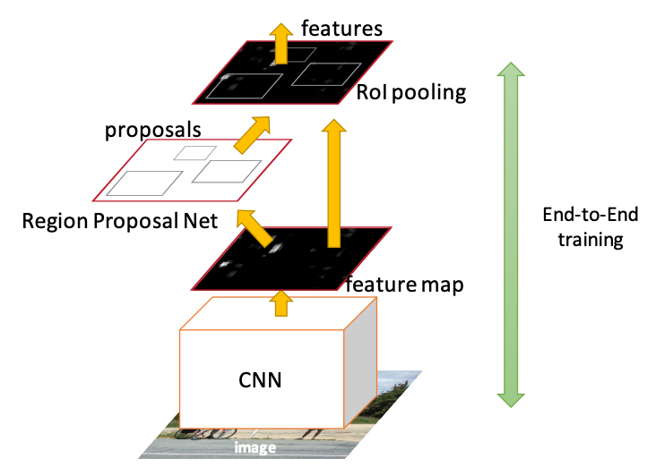

Object Detection
In the introductory section, we have seen examples of what object detection is. In this section we will treat the detection pipeline itself, summarized below:
 Object detection pipeline.
Object detection pipeline.
Work on object detection spans 20 years and is impossible to cover every algorithmic approach in this section - the interested reader can trace these developments by reading in this paper.

As expected, since 2014, deep learning has surpassed classical ML in the detection competitions - we therefore focus only on such architectures. More specifically we will be focusing on the so called two stage detectors that employ two key ingredients:
- Recognition using regions that we will explain shortly.
- CNNs that we covered earlier.
Object detection, involves three main stages: the feature extraction stage, the classification stage and the detection or localization stage. In the literature the feature and classification stages are counted as one, called the classification stage and people refer to such architecture as _two stage.
We also need to insert an additional requirement: to be able to detect objects in almost real time (20 frames per second) - a significant subset of what we call mission critical applications require it. Therefore will focus a specific family that is considered to be the canonical CNN architecture for detection - the family of Region CNNs.
Region CNN (RCNN)
Region Proposals
We can think about the detection problem as a classification problem of all possible portions (windows/masks) of the input image since an object can be located at any position and scale in the image. It is natural to search therefore everywhere and an obvious method to generate region proposals, is to slide various width-height ratio windows slide around the image and using a metric to declare that the window contains one or more blob of pixels. Obviously, such method is computationally infeasible and we need think of how to reduce this number by having some means of gauging where to look in the image.
RCNN can accommodate a number of efficient algorithms that can produce region proposals. The baseline RCNN employs instead selective search via hierarchical grouping.

The algorithm contains another algorithm that segments the image into initial regions.
Graph-based segmentation
We perform segmentation in the image using an efficient graph-based algorithm to obtain the set $R=\{r_1, \dots, r_n \}$ of initial regions. The segmentation algorithm starts by formulating the image as a graph.
Let G = (V, E) be an undirected graph with vertices $v_i \in V$ , the set of elements to be segmented, and edges $(v_i, v_j) ∈ E$ corresponding to pairs of neighboring vertices. Each edge has a corresponding weight $w((v_i, v_j ))$, which is a non-negative measure of the dissimilarity between neighboring elements $v_i$ and $v_j$. In the case of image segmentation, the elements in V are pixels and the weight of an edge is some measure of the dissimilarity between the two pixels connected by that edge (e.g., the difference in intensity, color, motion, location or some other local attribute).
In the graph-based approach, a segmentation $S$ is a partition of $V$ into components such that each component (or region) $C ∈ S$ corresponds to a connected component in a graph $G’ = (V, E’)$, where $E’ ⊆ E$. In other words, any segmentation is induced by a subset of the edges in $E$. There are different ways to measure the quality of a segmentation but in general we want the elements in a component to be similar, and elements in different components to be dissimilar. This means that edges between two vertices in the same component should have relatively low weights, and edges between vertices in different components should have higher weights.
For example, a pixel $p_i$ corresponds to a vertex $v_i$ and it has 8 neighboring pixels. We can define the weight to be the absolute value of the dissimilarity between the pixel intensity $I(p_i)$ and its neighbors.
$$w((v_i, v_j )) = |I(p_i) − I(p_j )|$$
Before we compute the weights we use the 2D Gaussian kernel / filter we met in the introductory section to CNNs - the end result being a smoothing of the image that helps with noise reduction. For color images we run the algorithm for each of the three channels.
There is one runtime parameter for the algorithm, which is the value of $k$ that is used to compute the threshold function $\tau$ . Recall we use the function $τ(C) =k/|C|$ where $|C|$ is the number of elements in C. Thus k effectively sets a scale of observation, in that a larger k causes a preference for larger components.
The graph algorithm can also accommodate dissimilarity weights between neighbors at a feature space rather at pixel level based on a Euclidean distance metric with other distance functions possible.
 Graph representation of the segmentation problem
Graph representation of the segmentation problem
Notice that the initial segments may be many and do not necessarily accurately represent distinct objects as shown below:
 Result of the initial segments produced by the graph-based algorithm, $k=300$
Result of the initial segments produced by the graph-based algorithm, $k=300$
Grouping
After the initial regions are produced, we use a greedy algorithm to iteratively group regions together. This is what gives the hierarchical in the name of the algorithm.
First the similarities between all neighboring regions are calculated. The two most similar regions are grouped together, and new similarities are calculated between the resulting region and its neighbors. The process of grouping the most similar regions is repeated until the whole image becomes a single region.
For the similarity $s(r_i ,rj)$ between region $r_i$ and $r_j$ we apply a variety of complementary measures under the constraint that they are fast to compute. In effect, this means that the similarities should be based on features that can be propagated through the hierarchy, i.e. when merging region $r_i$ and $r_j$ into $r_t$, the features of region $r_t$ need to be calculated from the features of $r_i$ and $r_j$ without accessing the image pixels. Such feature similarities include color, texture, size, fill - we create a binary sum of such individual similarities.
$$ s(r_i ,r_j) = a_1 s_{color}(r_i ,r_j)+a_2 s_{texture}(r_i ,r_j) + a_3 s_{size}(r_i ,r_j) + a_4 s_{fill}(r_i ,r_j) $$
where $a_i ∈ {0,1}$ denotes if the similarity measure is used or not.
The end result of the grouping is a hierarchy of regions ranked according to creation time. As earlier created regions may end up being the largest some permutation in the ranking is applied.
 Example of hierarchical grouping
Example of hierarchical grouping
The above selective search strategy is diversified (1) by using a variety of colour spaces with different invariance properties, (2) by using different similarity measures $s(r_i, r_j)$, and (3) by varying our initial regions. Each strategy results in a different hierarchy and after a permutation that randomizes the ranking the final list of regions is produced. For RCNN we use 2000 such region proposals.
 Final proposals - in reality we have 2000 of such regions.
Final proposals - in reality we have 2000 of such regions.
CNN Features and SVM Classification
Each of these proposals can be fed into a CNN (e.g. ResNet). Since regions are of various rectangular shapes, we warp the regions to a fixed size (CNNs can process fixed input tensors) of 227 x 227 pixels and the CNN produces a 4096-dim feature vector from each of the regions. Note that this representation of each region by 4096 elements is considered quite compact and more importantly the features are shared across classes.
Using these features we use a binary SVM classifier that produces a positive or negative on whether this feature contains the class of interest or not. We train a separate binary SVM classifier per class (binary classification).
The sharing of features allows us to parctically aggregate into a matrix all features of all regions (2000 x 4096) we well as aggregate the SVM weights into another matrix (4096 x K), where K is the number of classes we have trained for, and do this combined operation via a matrix-matrix product.
After the scoring of each proposed region by the SVM we apply a greedy Non-Maximum Suppression (NMS) algorithm for each class independently, that rejects a region if it has an Intersection over Union (IoU) metric higher than a threshold with a higher scoring region. This threshold was empirically determined to be 0.3 for the task outlined in the paper. But it is expected to be a hyperparameter in practice.
Finally, a bounding box regressor, predicts the location of the bounding boxes using the proposal boxes and nearby ground truth box data so that we can adjust the final detection box and avoid situations that whole objects are detected but partially included in the detection box.


The whole process is partially shown below and the solution is called Region-CNN (RCNN).
 RCNN pipeline
RCNN pipeline
 RCNN detection result after processing multiple region proposals
RCNN detection result after processing multiple region proposals
Training
RCNN training is complex as involves a multi-stage pipeline.
- R-CNN first fine pretrains a CNN on a classification task without using any bounding box ground truth.
- It then adapts the trained CNN by replacing the classification layer with another randomly initialized layer of span K+1, where K are the number of classes in the domain of interest (+1 is due to the fact that we consider the background). We continue training with SGD using (a) as inputs the warped images as determined by the region proposals (b) using this time the ground truth bounding boxes and declaring each region proposal with IoU ? 0.5 relative to the ground truth bounding box as true positive.
- Then, it fits SVMs to CNN features. These SVMs act as object detectors, replacing the softmax classifier learnt by fine-tuning.
.
Fast RCNN
Fast-RCNN is the second generation RCNN that aimed to accelerate RCNN. Apart from the complex training of RCNN, its inference involved a forward pass for each of the 2000 proposals.
 Fast RCNN Architecture
Fast RCNN Architecture
A Fast RCNN network takes as input an entire image and a set of proposals $R$. The set of proposals is produced by the selective search alg used in RCNN and its similarly around 2000 per image.
-
The network first processes the whole image with a CNN having several convolutional (experiments were done for 5-13 layers) and 5 max pooling layers to produce a feature map. The selective search met in RCNN, produces region proposals and for each proposal, a region of interest (RoI) pooling layer (see below) extracts a fixed-length feature vector from the feature map. This is in contrast to the RCNN that fed the different proposals to the CNN. Now we only have one feature map and we elect regions of interest from that.
-
Each feature vector is fed into a sequence of fully connected (fc) layers that finally branch into two sibling output layers: one that produces softmax probability estimates over K object classes plus a catch-all “background” class and another layer that outputs four real-valued numbers for each of the K object classes. Each set of 4 values encodes refined bounding-box positions for one of the K classes.
The key element in the architecture is the RoI pooling layer.
What is an RoI? An RoI is a rectangular window into a feature map. Each RoI is defined by a four-tuple (r, c, h, w) that specifies its top-left corner (r, c) and its height and width (h, w).
The RoI pooling layer uses max pooling to convert the features inside any valid region of interest into a small feature map with a fixed spatial extent of H × W (e.g.7 × 7), where H and W are layer hyper-parameters that are independent of any particular RoI. RoI max pooling works by dividing the h × w RoI window into an H × W grid of sub-windows of approximate size h/H × w/W and then max-pooling the values in each sub-window into the corresponding output grid cell. Pooling is applied independently to each feature map channel, as in standard max pooling
As you may have noticed we have replaced the SVN and the training can happen end to end starting from a pretrained CNN and using a multi-task (classification, regression) loss function. NMS is maintained just like in RCNN to produce the final box.
Faster RCNN
With Faster RCNN, we are not making changes to Fast RCNN detector itself bur rather to the input of the CNN. The selective search algorithm that is considered slow and computationally expensive is replaced with a neural network called the Region Proposal Network (RPN) that as the name implies proposes regions.
 Faster RCNN Architecture - the RPN tells the Fast RCNN detector where to attend to
Therefore, in this architecture there is one CNN network that does not only produces a global feature map but also it produces proposals from the feature map itself rather than the original image.
 Region Proposals as generated by the RPN network
Region Proposals as generated by the RPN network
It is doing so by sliding a window n x n over the feature map. At each sliding-window location, we simultaneously predict multiple region proposals, where the number of maximum possible proposals for each location is denoted as k. So the reg layer has 4k outputs encoding the coordinates of k boxes, and the cls layer outputs 2k scores that estimate probability of object or not object for each proposal.
The k proposals are parameterized relative to k reference boxes, which we call anchor boxes. The size can be changed but the original paper used anchor size of (128 × 128, 256 × 256, 512 × 512) and three aspect ratios (1:1, 1:2 and 2:1). An anchor is centered at the sliding window in question, and is associated with a scale and aspect ratio. By default we use 3 scales and 3 aspect ratios, yielding k = 9 anchors at each sliding position. For a feature map of a size W × H (typically ∼2,400), there are $W xH x k$ anchors in total.
The RPN network produces a classification score i.e. how confident we are that there is an object for each of the anchor boxes as well as the regression on the anchor box coordinates.

Finally, the following curve (focus on COCO) presents the relative performance between